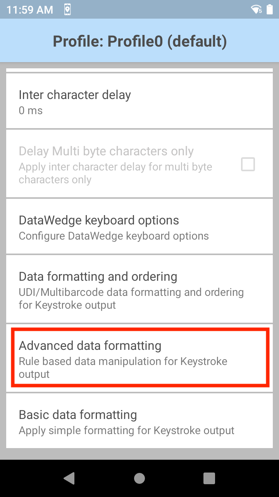
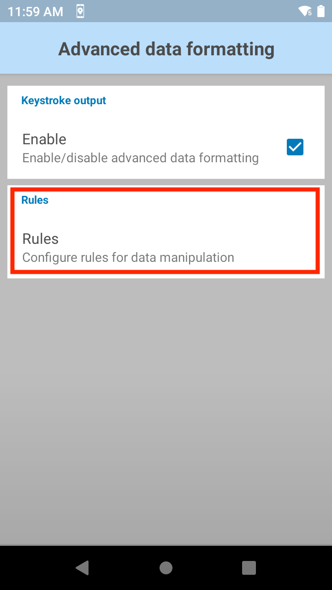
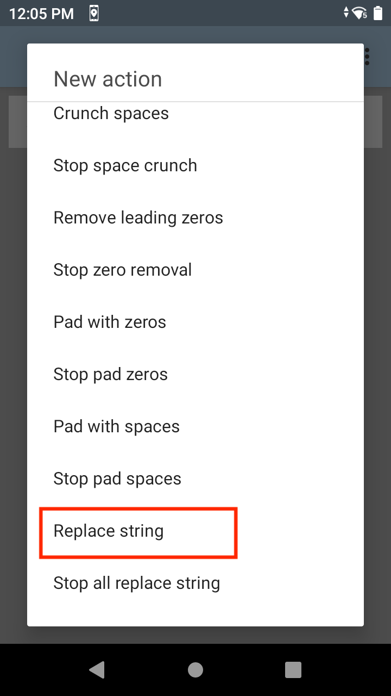
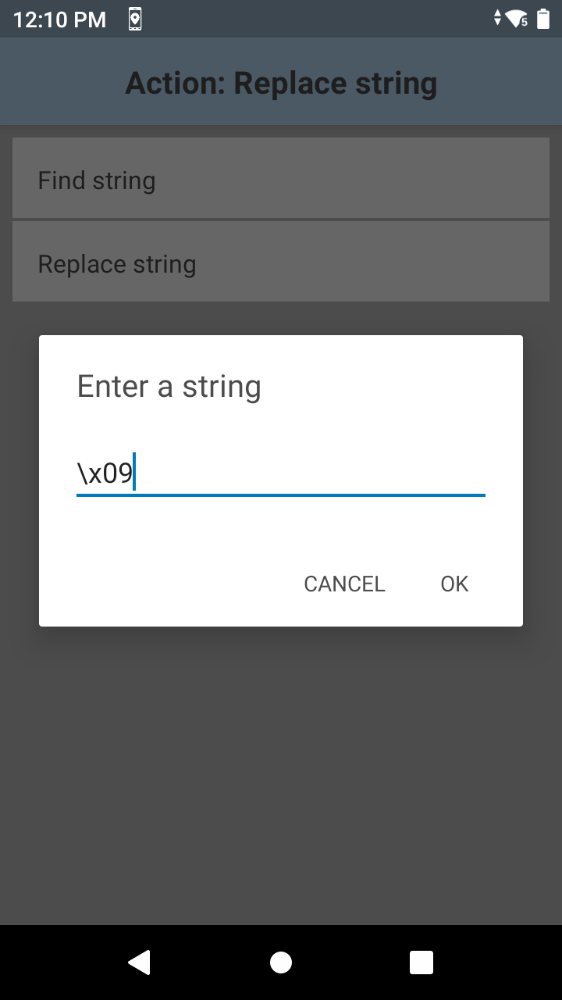
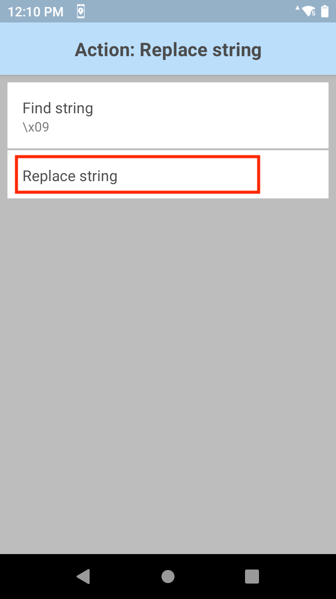

概要
キーストローク出力は、処理されたデータを収集し、それを一連のキーストロークとして、関連付けられたアプリケーションに送信して、ユーザーがデバイスのキーを押すアクションをエミュレートします。DataWedge では、さらに処理するための取得したデータの送信、別の入力フィールドへのカーソルの移動、またはその他の理由で、アプリケーションが必要とする可能性のある TAB、ENTER、およびその他の特殊文字をサポートしています。特殊文字は、アクション キー文字 (以下を参照) を使用して取得したデータに追加するか、基本データ形式または高度なデータ形式処理機能で追加します。
この機能のパラメータは、構成の設定 API を使用して構成できます。
Android 10 以降では、スキャン中にデフォルトのキーボードが一時的に表示されなくなり、データがアプリに配信された後に再び表示されます。これは、DataWedge で独自の InputMethodService を使用してデータをディスパッチすることに起因します。
未加工データの出力
DataWedge では、取得したデータを、通常のプレーンテキスト モードと 16 進モードに加えて、エンコーダを適用する前の未加工形式で出力できます。これは、Zebra でサポートされていない文字セットを取得するためにカスタム エンコーダが必要な場合に便利です。
未加工データは、com.symbol.datawedge.decode_data インテント エクストラを使用してバイト ストリームとして受信されます。詳細については、「インテント出力」ガイドを参照してください。
未加工データをキーストロークとして出力することはできません。
キーストローク出力のセットアップ
プロファイルのキーストローク出力を有効にするには、次のようにチェックボックスをオンにします。 キーストローク出力オプション
アクション キー文字 - バーコード、シリアル、RFID、音声、または MSR データに埋め込まれた特殊文字の挿入を有効にします。指定可能な値:
- なし - アクション キーを挿入しません
- タブ - ASCII タブ (0x09) 文字の代わりにアクション キーを挿入します
- ライン フィード - ASCII LF (0x0A) 文字の代わりにアクション キーを挿入します
- キャリッジ リターン - ASCII CR (0x0D) 文字の代わりにアクション キーを挿入します
キー イベント オプション - キーストロークをキー イベントとして送信し、特定のキー イベントを文字列として送信し、キー イベントの遅延を制御します。オプション:
キー イベントの遅れ - キー イベントが送信されるまでの遅延 (ミリ秒) を設定します。フォアグラウンド アプリケーションに制御文字をキーストロークとしてディスパッチするために使用します。このパラメータは、テキストとキー イベントを含むデータを送信するときに、キー イベントの非同期送信によりデータが誤った順序で配信される場合に役立ちます。このような場合は、キー イベントの遅れを追加して、データ配信の順序を修正することをお勧めします。
文字をイベントとして送信 - ASCII コード 32 ～ 126 をキー イベントとして送信するように設定します
Enter を文字列で送信 - ENTER キー ストローク出力を文字列として送信するように設定します。デフォルトでは、これは無効になっており、ENTER がキー イベントとして送信されます。
タブを文字列で送信 - TAB キー ストローク出力を文字列として送信するように設定します。デフォルトでは、これは無効になっており、TAB がキー イベントとして送信されます。
制御文字をイベントとして送信 - ASCII コード 1 ～ 31 をキー イベントとして送信するように設定しますデフォルトでは、これは無効になっており、データは文字列として送信されます。ASCII 制御文字と Android KeyEvents とのマッピングについては、「ASCII 制御文字」の表を参照してください。Android アプリケーションでは、onKeyUp() API と onKeyDown() API を使用してキー イベントをリッスンできます。しかし、Web アプリケーションでは、DOM (Document Object Model) を使用してこれらのキー イベントをリッスンします。Android のキー押しイベントは生成しません。たとえば、Web ブラウザでバーコードをスキャンするときに、バーコードに Ctrl+F 文字が含まれている場合、[検索] ウィンドウは開きません。同様に、バーコードに Ctrl+H が含まれている場合、[履歴] ウィンドウは開きません。
文字間の遅れ - 各文字をアプリケーションに配信した後の遅延 (ミリ秒) を設定するのに使用します。このパラメータは、データのディスパッチが速すぎて、アプリケーションで受け入れられない場合に発生する問題を回避できるようにするためのものです。デフォルト = 0。キーストロークの配信でエラーが発生する場合は、エラーがなくなるまで、この値を 100 刻みで増やします (最大値は 1000)。注: このパラメータは、アプリケーションの性能を低下させるおそれがあります。
マルチバイト文字の遅れ - 文字間の遅れ (上記を参照) をマルチバイト文字のみに適用します。このパラメータは、Unicode 文字とマルチバイト文字を Android ブラウザに送信する際に発生する問題を回避できるようにするためのものです。文字間の遅れが有効になっている場合にのみ使用できます。デフォルトでは無効です。
DataWedge キーボード オプション - キーストローク データをディスパッチするときに DataWedge の「キーボード」(デフォルトのキーボードを置き換える DataWedge アイコン) を表示したり、DataWedge キーボードが表示される期間を設定したりするのに使用します。Android 10 以降に該当し、スキャン中にデフォルトのキーボードが表示されなくなり、データがアプリに配信された後に再び表示されます。この機能を有効にすると、スキャンを実行し、データがディスパッチされているときに、デフォルトのキーボードが DataWedge キーボードで置き換えられます。データのディスパッチが完了してタイムアウトになると、キーボードはデフォルトのキーボードに戻ります。このオプションは、以下の状況で有効にすることをお勧めします。
- Web ページまたは Android アプリケーションでの各スキャンの後に、([基本データ形式] の設定に従って) ENTER/TAB キーを使用して次のテキスト フィールドに自動的に移動する必要がある場合。
- 連続スキャン セッション中にデフォルトのキーボードが表示されないようにする必要がある場合。
DataWedge キーボード オプション:
- DataWedge キーボード表示 - DataWedge キーボードの表示を有効/無効にします。このオプションをオンにすると、DataWedge キーボードにグラフィカル ユーザー インタフェースが表示されます。注: このオプションを有効/無効にしても、Android システムの言語と入力の構成は変更されません。
- キーボード表示タイムアウト - スキャン後のキーボードの表示時間 (秒) を設定するのに使用します。デフォルト値は 10 秒です。このタイムアウトは、[DataWedge キーボード表示] が有効になっている場合にのみ適用されます。必要に応じて、キーボード UI をタップして、タイムアウトになる前に前のキーボードに戻すことができます。タイムアウト値を 0 に設定すると、タイムアウトは無限になります。DataWedge キーボード UI をタップするか、プロファイルを切り替えない限り、キーボードは前のキーボードに切り替わりません。
プロファイルのインポート動作
以前のバージョンから DataWedge 6.7 以降にインポートしたプロファイルの場合は、[マルチバイト文字の遅れ] に指定した値が文字間の遅れに適用され、[マルチバイト文字のみの遅れ] パラメータが有効になります。
DataWedge 6.7 以降で作成され、以前のバージョンにインポートしたプロファイルの場合は、指定した遅れ (存在する場合) がマルチバイト文字にのみ適用されます。
UDI データ出力
この設定は、バーコード リーダー パラメータの [スキャン モード] が [UDI] に設定されている場合に該当し、参照先のセクションで選択した 機器固有識別子パラメータで指定された複数のデータ ポイント (トークン) を取得します。
UDI バーコードのサポートは、BSP 10.12.13「Update 17」以降を搭載した Android 10 を実行している Zebra デバイスで復活しました。

トークン選択 - 必要に応じて、取得した UDI データの出力順序を調整し、場合によっては、トークン間にタブ、ライン フィード、またはキャリッジ リターン文字を挿入できます。
UDI トークンの設定を調整するには:
1.[トークンの送信] をタップして、取得した UDI データの目的の出力を選択します。
トークンのみ - UDI データが個別のトークンに分割されて出力されます (選択した場合は、セパレータ文字で区切られます)。
バーコード/トークン - トークン化されたデータを追加したバーコード文字列が送信されます。セパレータ文字が選択されていない場合 (手順 2 を参照) は、同じデータの 2 つのインスタンスが送信されます。
2.必要に応じて、[トークン選択] 画面の [トークン セパレータ] をタップして、トークン間に挿入するセパレータ文字を指定します。[バーコードとトークン] モードを選択すると、選択した文字が両者の間にも挿入されます。 この設定は、[トークンの送信] が無効になっている場合は使用できません。
この設定は、[トークンの送信] が無効になっている場合は使用できません。
3.[トークン順序] をタップして、出力にトークンを含めるか、出力からトークンを除外して、出力順序を調整します。 トークンをドラッグして出力順序を調整。
トークンをドラッグして出力順序を調整。
プログラムによる UDI データ出力の構成および構成の取得については、以下を参照してください。
マルチバーコード データ出力
この設定は、バーコード リーダー パラメータの [スキャン モード] が[マルチバーコード] に設定されている場合に該当し、対応するリーダー パラメータに指定されている数のバーコード (2 ～ 10) を同時に取得します。
マルチバーコード出力を構成するには:
[データ形式と順序] をタップして、各バーコードのデータ間に挿入するセパレータ文字を指定します。
[バーコード セパレータ] をタップして、目的の挿入文字 (CR、LF、または TAB) を指定します。
これにより、各バーコードの間にセパレータが追加され、最後のバーコードの後にセパレータが追加されます。最後のバーコードの後の余分なセパレータを削除するには、[高度なデータ形式] ルールの [文字列の削除] アクションを使用します。
各バーコードのデータが連結されて、1 つのキーストローク文字列として配信されます。
カスタム セパレータ文字をマルチバーコード セパレータとして構成するには:
サポートされているデフォルト文字 (CR、LF、または TAB) をマルチバーコード セパレータとして選択し、高度なデータ形式プラグイン構成を選択して、この選択した文字をユーザー指定の文字に置き換えます。以下の手順では、カスタム セパレータ文字として「TAB」を「+」に置き換えます。
- [データ形式と順序] をタップして、各バーコードのデータ間に挿入するセパレータ文字を指定します。
- [バーコード セパレータ] をタップして、目的の挿入文字 (CR、LF、または TAB) を指定します。この場合は、[TAB] を選択します。
この手順を実行しないと、各バーコードのデータは連結され、1 つのキーストローク文字列として配信されます。 - 戻るをタップして、メイン プロファイル画面に戻ります。[高度なデータ形式] を選択します 
- [キーストローク出力] で [有効] をクリックします (チェックボックスをタップします)。[ルール] をタップします。
- [Rule0] をタップします。
- [アクション] をタップして構成します。
- 右上の 3 本線メニューから、[新規アクション] を選択します。
- 下にスクロールして、[文字列の置換] をタップします。
- [文字列の置換] をタップします。
- [文字列の検索] をタップします。
- タブの 16 進表記\x09 を入力します。[OK] をタップします。
- [文字列の置換] をタップします。
- 置換に使用する文字列 (「+」など) を入力します。[OK] をタップします。
- 戻るをタップして、ルールに戻ります。
- [文字列の置換] の横にある水平バーをタップして長押しし、[残りを送信] の上にドラッグします。
- 戻るをタップします。
スキャンを実行すると、マルチバーコード デコードの各バーコードの後にプラス記号 (+) が付くようになります。
16 進データ出力
16 進データは、未加工形式から、選択した文字セットに変換された後にスキャナ フレームワークから受信したエンコード データに基づいています。16 進出力オプションが選択されている場合、プレーンテキスト文字列は、対応する 16 進数値に変換され、文字列として出力されます。この 16 進データはプログラムで取得できます。
次の Java コマンドは、キーストロークまたはインテント出力文字列に格納された 16 進データを返します。
String hex = Hex.encodeHex(data.getString(DATA_STRING_TAG).toCharArray(), false);
詳細、および DataWedge UI を使用して 16 進出力を有効にする方法については、「基本データ形式 (BDF)」を参照してください。
ASCII 制御文字の表
ASCII 制御文字 (範囲: 1 ～ 31) から Android KeyEvents へのマッピングに関する表
| コントロール キー | 10 進数 | 制御文字名 | 説明 | キー イベント |
|---|---|---|---|---|
| Ctrl-A | 1 | 見出しの開始 | 見出しの最初の文字として使用します | KeyEvent { action=ACTION_DOWN, keyCode=KEYCODE_A, scanCode=0, metaState=META_CTRL_LEFT_ON, flags=<>, repeatCount=0, eventTime=<>, downTime=<>, deviceId=<>, source=0x0 } KeyEvent { action=ACTION_UP, keyCode=KEYCODE_A, scanCode=0, metaState=META_CTRL_LEFT_ON, flags=<>, repeatCount=0, eventTime=<>, downTime=<>, deviceId=<>, source=0x0 } |
| Ctrl-B | 2 | テキストの開始 | テキストの前に指定して、見出しを終了するのに使用します | KeyEvent { action=ACTION_DOWN, keyCode=KEYCODE_B, scanCode=0, metaState=META_CTRL_LEFT_ON, flags=<>, repeatCount=0, eventTime=<>, downTime=<>, deviceId=<>, source=0x0 } KeyEvent { action=ACTION_UP, keyCode=KEYCODE_B, scanCode=0, metaState=META_CTRL_LEFT_ON, flags=<>, repeatCount=0, eventTime=<>, downTime=<>, deviceId=<>, source=0x0 } |
| Ctrl-C | 3 | テキストの終了 | テキストを終了します | KeyEvent { action=ACTION_DOWN, keyCode=KEYCODE_C, scanCode=0, metaState=META_CTRL_LEFT_ON, flags=<>, repeatCount=0, eventTime=<>, downTime=<>, deviceId=<>, source=0x0 } KeyEvent { action=ACTION_UP, keyCode=KEYCODE_C, scanCode=0, metaState=META_CTRL_LEFT_ON, flags=<>, repeatCount=0, eventTime=<>, downTime=<>, deviceId=<>, source=0x0 } |
| Ctrl-D | 4 | 送信の終了 | テキスト送信の終了を示します | KeyEvent { action=ACTION_DOWN, keyCode=KEYCODE_D, scanCode=0, metaState=META_CTRL_LEFT_ON, flags=<>, repeatCount=0, eventTime=<>, downTime=<>, deviceId=<>, source=0x0 } KeyEvent { action=ACTION_UP, keyCode=KEYCODE_D, scanCode=0, metaState=META_CTRL_LEFT_ON, flags=<>, repeatCount=0, eventTime=<>, downTime=<>, deviceId=<>, source=0x0 } |
| Ctrl-E | 5 | 照会 | 応答の要求として使用します | KeyEvent { action=ACTION_DOWN, keyCode=KEYCODE_E, scanCode=0, metaState=META_CTRL_LEFT_ON, flags=<>, repeatCount=0, eventTime=<>, downTime=<>, deviceId=<>, source=0x0 } KeyEvent { action=ACTION_UP, keyCode=KEYCODE_E, scanCode=0, metaState=META_CTRL_LEFT_ON, flags=<>, repeatCount=0, eventTime=<>, downTime=<>, deviceId=<>, source=0x0 } |
| Ctrl-F | 6 | 確認 | 送信側への肯定応答としてレシーバによって送信されます | KeyEvent { action=ACTION_DOWN, keyCode=KEYCODE_F, scanCode=0, metaState=META_CTRL_LEFT_ON, flags=<>, repeatCount=0, eventTime=<>, downTime=<>, deviceId=<>, source=0x0 } KeyEvent { action=ACTION_UP, keyCode=KEYCODE_F, scanCode=0, metaState=META_CTRL_LEFT_ON, flags=<>, repeatCount=0, eventTime=<>, downTime=<>, deviceId=<>, source=0x0 } |
| Ctrl-G | 7 | ベル | 注意を喚起する必要がある場合に使用します | KeyEvent { action=ACTION_DOWN, keyCode=KEYCODE_G, scanCode=0, metaState=META_CTRL_LEFT_ON, flags=<>, repeatCount=0, eventTime=<>, downTime=<>, deviceId=<>, source=0x0 } KeyEvent { action=ACTION_UP, keyCode=KEYCODE_G, scanCode=0, metaState=META_CTRL_LEFT_ON, flags=<>, repeatCount=0, eventTime=<>, downTime=<>, deviceId=<>, source=0x0 } |
| Ctrl-H | 8 | バックスペース | アクティブな位置を、同じ行の 1 文字後方に移動します | KeyEvent { action=ACTION_DOWN, keyCode=KEYCODE_H, scanCode=0, metaState=META_CTRL_LEFT_ON, flags=<>, repeatCount=0, eventTime=<>, downTime=<>, deviceId=<>, source=0x0 } KeyEvent { action=ACTION_UP, keyCode=KEYCODE_H, scanCode=0, metaState=META_CTRL_LEFT_ON, flags=<>, repeatCount=0, eventTime=<>, downTime=<>, deviceId=<>, source=0x0 } |
| Ctrl-I | 9 | 水平タブ | アクティブな位置を、同じ行の次の所定の文字位置に進めます | Android で定義されている、Tab キーの定数により、「タブを文字列/イベントで送信」によって管理されます |
| Ctrl-J | 10 | ライン フィード | アクティブな位置を、次の行の同じ文字位置に進めます | Android で定義されている、Enter キーの定数により、「Enter を文字列/イベントで送信」によって管理されます |
| Ctrl-K | 11 | 垂直タブ | アクティブな位置を、次の所定の行の同じ文字位置に進めます | KeyEvent { action=ACTION_DOWN, keyCode=KEYCODE_K, scanCode=0, metaState=META_CTRL_LEFT_ON, flags=<>, repeatCount=0, eventTime=<>, downTime=<>, deviceId=<>, source=0x0 } KeyEvent { action=ACTION_UP, keyCode=KEYCODE_K, scanCode=0, metaState=META_CTRL_LEFT_ON, flags=<>, repeatCount=0, eventTime=<>, downTime=<>, deviceId=<>, source=0x0 } |
| Ctrl-L | 12 | フォーム フィード | アクティブな位置を、次のフォームまたはページの所定の行の同じ文字位置に進めます | KeyEvent { action=ACTION_DOWN, keyCode=KEYCODE_L, scanCode=0, metaState=META_CTRL_LEFT_ON, flags=<>, repeatCount=0, eventTime=<>, downTime=<>, deviceId=<>, source=0x0 } KeyEvent { action=ACTION_UP, keyCode=KEYCODE_L, scanCode=0, metaState=META_CTRL_LEFT_ON, flags=<>, repeatCount=0, eventTime=<>, downTime=<>, deviceId=<>, source=0x0 } |
| Ctrl-M | 13 | キャリッジ リターン | アクティブな位置を、同じ行の最初の文字位置に移動します | Android で定義されている、Enter キーの定数により、「Enter を文字列/イベントで送信」によって管理されます |
| Ctrl-N | 14 | シフト アウト | SHIFT IN および ESCAPE と組み合わせて使用して、コードのグラフィック文字セットを拡張します | KeyEvent { action=ACTION_DOWN, keyCode=KEYCODE_N, scanCode=0, metaState=META_CTRL_LEFT_ON, flags=<>, repeatCount=0, eventTime=<>, downTime=<>, deviceId=<>, source=0x0 } KeyEvent { action=ACTION_UP, keyCode=KEYCODE_N, scanCode=0, metaState=META_CTRL_LEFT_ON, flags=<>, repeatCount=0, eventTime=<>, downTime=<>, deviceId=<>, source=0x0 } |
| Ctrl-O | 15 | シフト イン | SHIFT OUT および ESCAPE と組み合わせて使用して、コードのグラフィック文字セットを拡張します | KeyEvent { action=ACTION_DOWN, keyCode=KEYCODE_O, scanCode=0, metaState=META_CTRL_LEFT_ON, flags=<>, repeatCount=0, eventTime=<>, downTime=<>, deviceId=<>, source=0x0 } KeyEvent { action=ACTION_UP, keyCode=KEYCODE_O, scanCode=0, metaState=META_CTRL_LEFT_ON, flags=<>, repeatCount=0, eventTime=<>, downTime=<>, deviceId=<>, source=0x0 } |
| Ctrl-P | 16 | データ リンク エスケープ | 連続して続く限られた数の文字の意味を変更します。これは、データ送信を補助的に制御できるようにするためにのみ使用されます。 | KeyEvent { action=ACTION_DOWN, keyCode=KEYCODE_P, scanCode=0, metaState=META_CTRL_LEFT_ON, flags=<>, repeatCount=0, eventTime=<>, downTime=<>, deviceId=<>, source=0x0 } KeyEvent { action=ACTION_UP, keyCode=KEYCODE_P, scanCode=0, metaState=META_CTRL_LEFT_ON, flags=<>, repeatCount=0, eventTime=<>, downTime=<>, deviceId=<>, source=0x0 } |
| Ctrl-Q | 17 | デバイス制御 1 | 主に補助デバイスをオンまたは起動することを目的としています | KeyEvent { action=ACTION_DOWN, keyCode=KEYCODE_Q, scanCode=0, metaState=META_CTRL_LEFT_ON, flags=<>, repeatCount=0, eventTime=<>, downTime=<>, deviceId=<>, source=0x0 } KeyEvent { action=ACTION_UP, keyCode=KEYCODE_Q, scanCode=0, metaState=META_CTRL_LEFT_ON, flags=<>, repeatCount=0, eventTime=<>, downTime=<>, deviceId=<>, source=0x0 } |
| Ctrl-R | 18 | デバイス制御 2 | 主に補助デバイスをオンまたは起動することを目的としています | KeyEvent { action=ACTION_DOWN, keyCode=KEYCODE_R, scanCode=0, metaState=META_CTRL_LEFT_ON, flags=<>, repeatCount=0, eventTime=<>, downTime=<>, deviceId=<>, source=0x0 } KeyEvent { action=ACTION_UP, keyCode=KEYCODE_R, scanCode=0, metaState=META_CTRL_LEFT_ON, flags=<>, repeatCount=0, eventTime=<>, downTime=<>, deviceId=<>, source=0x0 } |
| Ctrl-S | 19 | デバイス制御 3 | 主に補助デバイスをオフまたは停止することを目的としています | KeyEvent { action=ACTION_DOWN, keyCode=KEYCODE_S, scanCode=0, metaState=META_CTRL_LEFT_ON, flags=<>, repeatCount=0, eventTime=<>, downTime=<>, deviceId=<>, source=0x0 } KeyEvent { action=ACTION_UP, keyCode=KEYCODE_S, scanCode=0, metaState=META_CTRL_LEFT_ON, flags=<>, repeatCount=0, eventTime=<>, downTime=<>, deviceId=<>, source=0x0 } |
| Ctrl-T | 20 | デバイス制御 4 | 主に補助デバイスをオフ、停止、または中断することを目的としています | KeyEvent { action=ACTION_DOWN, keyCode=KEYCODE_T, scanCode=0, metaState=META_CTRL_LEFT_ON, flags=<>, repeatCount=0, eventTime=<>, downTime=<>, deviceId=<>, source=0x0 } KeyEvent { action=ACTION_UP, keyCode=KEYCODE_T, scanCode=0, metaState=META_CTRL_LEFT_ON, flags=<>, repeatCount=0, eventTime=<>, downTime=<>, deviceId=<>, source=0x0 } |
| Ctrl-U | 21 | 否定応答 | 送信側への否定応答としてレシーバによって送信されます | KeyEvent { action=ACTION_DOWN, keyCode=KEYCODE_U, scanCode=0, metaState=META_CTRL_LEFT_ON, flags=<>, repeatCount=0, eventTime=<>, downTime=<>, deviceId=<>, source=0x0 } KeyEvent { action=ACTION_UP, keyCode=KEYCODE_U, scanCode=0, metaState=META_CTRL_LEFT_ON, flags=<>, repeatCount=0, eventTime=<>, downTime=<>, deviceId=<>, source=0x0 } |
| Ctrl-V | 22 | 同期アイドル | 他の文字がない場合 (アイドル状態) に同期送信システムによって使用され、データ端末装置間で同期を実現または維持するための信号を送出します。 | KeyEvent { action=ACTION_DOWN, keyCode=KEYCODE_V, scanCode=0, metaState=META_CTRL_LEFT_ON, flags=<>, repeatCount=0, eventTime=<>, downTime=<>, deviceId=<>, source=0x0 } KeyEvent { action=ACTION_UP, keyCode=KEYCODE_V, scanCode=0, metaState=META_CTRL_LEFT_ON, flags=<>, repeatCount=0, eventTime=<>, downTime=<>, deviceId=<>, source=0x0 } |
| Ctrl-W | 23 | 送信ブロックの終わり | データの送信ブロックの終わりを示し、データは送信目的でこのようなブロックに分割されます | KeyEvent { action=ACTION_DOWN, keyCode=KEYCODE_W, scanCode=0, metaState=META_CTRL_LEFT_ON, flags=<>, repeatCount=0, eventTime=<>, downTime=<>, deviceId=<>, source=0x0 } KeyEvent { action=ACTION_UP, keyCode=KEYCODE_W, scanCode=0, metaState=META_CTRL_LEFT_ON, flags=<>, repeatCount=0, eventTime=<>, downTime=<>, deviceId=<>, source=0x0 } |
| Ctrl-X | 24 | キャンセル | 先行するデータにエラーがあるため、そのデータを無視することを示します | KeyEvent { action=ACTION_DOWN, keyCode=KEYCODE_X, scanCode=0, metaState=META_CTRL_LEFT_ON, flags=<>, repeatCount=0, eventTime=<>, downTime=<>, deviceId=<>, source=0x0 } KeyEvent { action=ACTION_UP, keyCode=KEYCODE_X, scanCode=0, metaState=META_CTRL_LEFT_ON, flags=<>, repeatCount=0, eventTime=<>, downTime=<>, deviceId=<>, source=0x0 } |
| Ctrl-Y | 25 | メディアの終わり | メディアの物理的な終わりを示します | KeyEvent { action=ACTION_DOWN, keyCode=KEYCODE_Y, scanCode=0, metaState=META_CTRL_LEFT_ON, flags=<>, repeatCount=0, eventTime=<>, downTime=<>, deviceId=<>, source=0x0 } KeyEvent { action=ACTION_UP, keyCode=KEYCODE_Y, scanCode=0, metaState=META_CTRL_LEFT_ON, flags=<>, repeatCount=0, eventTime=<>, downTime=<>, deviceId=<>, source=0x0 } |
| Ctrl-Z | 26 | 置換 | 無効な文字またはエラーになっている文字の代わりに使用します。自動化手段での導入を目的としています。 | KeyEvent { action=ACTION_DOWN, keyCode=KEYCODE_Z, scanCode=0, metaState=META_CTRL_LEFT_ON, flags=<>, repeatCount=0, eventTime=<>, downTime=<>, deviceId=<>, source=0x0 } KeyEvent { action=ACTION_UP, keyCode=KEYCODE_Z, scanCode=0, metaState=META_CTRL_LEFT_ON, flags=<>, repeatCount=0, eventTime=<>, downTime=<>, deviceId=<>, source=0x0 } |
| Ctrl-[ | 27 | エスケープ | 追加の制御機能を提供するのに使用します | KeyEvent { action=ACTION_DOWN, keyCode=KEYCODE_LEFT_BRACKET, scanCode=0, metaState=META_CTRL_LEFT_ON, flags=<>, repeatCount=0, eventTime=<>, downTime=<>, deviceId=<>, source=0x0 } KeyEvent { action=ACTION_UP, keyCode=KEYCODE_LEFT_BRACKET, scanCode=0, metaState=META_CTRL_LEFT_ON, flags=<>, repeatCount=0, eventTime=<>, downTime=<>, deviceId=<>, source=0x0 } |
| Ctrl-\ | 28 | ファイル セパレータ | データを論理的に分離して限定するのに使用します | KeyEvent { action=ACTION_DOWN, keyCode=KEYCODE_BACKSLASH, scanCode=0, metaState=META_CTRL_LEFT_ON, flags=<>, repeatCount=0, eventTime=<>, downTime=<>, deviceId=<>, source=0x0 } KeyEvent { action=ACTION_UP, keyCode=KEYCODE_BACKSLASH, scanCode=0, metaState=META_CTRL_LEFT_ON, flags=<>, repeatCount=0, eventTime=<>, downTime=<>, deviceId=<>, source=0x0 } |
| Ctrl-] | 29 | グループ セパレータ | データを論理的に分離して限定するのに使用します | KeyEvent { action=ACTION_DOWN, keyCode=KEYCODE_RIGHT_BRACKET, scanCode=0, metaState=META_CTRL_LEFT_ON, flags=<>, repeatCount=0, eventTime=<>, downTime=<>, deviceId=<>, source=0x0 } KeyEvent { action=ACTION_UP, keyCode=KEYCODE_RIGHT_BRACKET, scanCode=0, metaState=META_CTRL_LEFT_ON, flags=<>, repeatCount=0, eventTime=<>, downTime=<>, deviceId=<>, source=0x0 } |
| Ctrl-^ | 30 | レコード セパレータ | データを論理的に分離して限定するのに使用します | KeyEvent { action=ACTION_DOWN, keyCode=KEYCODE_6, scanCode=0, metaState=META_SHIFT_LEFT_ON|META_CTRL_LEFT_ON, flags=<>, repeatCount=0, eventTime=<>, downTime=<>, deviceId=<>, source=0x0 } KeyEvent { action=ACTION_UP, keyCode=KEYCODE_6, scanCode=0, metaState=META_SHIFT_LEFT_ON|META_CTRL_LEFT_ON, flags=<>, repeatCount=0, eventTime=<>, downTime=<>, deviceId=<>, source=0x0 } |
| Ctrl-_ | 31 | ユニット セパレータ | データを論理的に分離して限定するのに使用します | KeyEvent { action=ACTION_DOWN, keyCode=KEYCODE_MINUS, scanCode=0, metaState=META_SHIFT_LEFT_ON|META_CTRL_LEFT_ON, flags=<>, repeatCount=0, eventTime=<>, downTime=<>, deviceId=<>, source=0x0 } KeyEvent { action=ACTION_UP, keyCode=KEYCODE_MINUS, scanCode=0, metaState=META_SHIFT_LEFT_ON|META_CTRL_LEFT_ON, flags=<>, repeatCount=0, eventTime=<>, downTime=<>, deviceId=<>, source=0x0 } |
その他の DataWedge 出力オプション:
- インターネット プロトコル - TCP または UDP を使用してネットワーク経由でデータを出力します
- インテント - インテント エクストラとしてデータをアプリに配信します
関連ガイド: